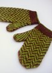
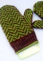

|
||
Premium Patterns Wintry Mix Mitts Love Bytes HawkeyeFree Patterns Kiddie Cadet Summerlin Ruffled Scarf Seamless DS Sock Simply Seamless Pouch Myriads of MushroomsExtras DIY Mitten Blocker Felt Patch Tutorial Yarn Dyeing Tutorial Needle Pouches Knitting Journal |
April 16, 2008 - Posted by Alice SchneblyFourth Time's a CharmProject Specs After finishing up my Fiddlehead Mittens I really got into a bit of a slump. I cast on for a couple different projects but wasn’t feeling them at all and knit less than half an hour each day last week—and sometimes not at all! Finally I decided to stop trying to force myself to work on something I really wasn’t that into and knit up one of my favorite patterns in one of my favorite yarns. Okay, I know, you could be tired of seeing Herringbone Mittens but I definitely am not tired of making them! I love this pattern more and more each time I make it. This is the fourth pair of these mittens I’ve made and probably my favorite yet, maybe because they’re made from my favorite yarn! The double thick Malabrigo is insanely cushy and soft. I also love how the slight variations in each color enhances the pattern rather than taking away from it. I decided to knit these in the same colorways as my Thorpe Hat so I could wear them together if I wanted to. I hope they’re not too matchy-matchy and instead fall into the well-coordinated category. There’s probably only so much gushing one can do about a pattern, and I think I’ve said it three times now how much I love it. Really I can’t get enough of these mittens and at this point I only have to look at the pattern every few rows. I wonder how many more times I’ll have to knit it until I have it completely memorized. I get quite a few questions on how I block my mittens so I’d thought I’d share my info with you. Of course there are lots of different ways to wash and block your items, this is just what works best for me. First I soak my mittens in tepid water with a bit of wool wash for at least 30 minutes. If the mittens are stranded, I usually move then around a couple times during the soak. I like to put my hand inside and also stretch and tug on the mittens a little to even out the colorwork. Then I bring them out of the water and place them flat on a towel, fold the towel over the mittens and then press down to remove the excess water. Next, I shape them over my homemade mitten blocker. Up until a few days ago I’ve used the cardboard mitten blocker I made after knitting my Bird in Hand mittens. My tension was so tight and they really needed a good stretch so they’d fit. It works great, but I decided I wanted something that is both heat and water proof—and a little nicer looking. I made a new blocker out of some template plastic (the kind that is used for quilting) and I love it. I’m working on putting together a tutorial on how to make your own so check back tomorrow if you’re interested! Also, if you haven’t entered our 1-year Blogiversary giveaway yet definitely leave a comment so you have a chance to win one of the two packages we’ve put together! Everyone is welcome to enter! |
   Recent ReviewsRecent Posts
 Our Favorites
|
| © 2007 KathrynIvy.com | ||
{kind=link}
{kind=link}